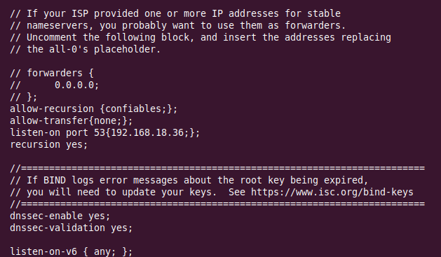
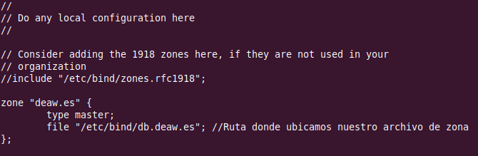

Práctica 4.1 - Configuración de un servidor DNS
Nota importante
Es muy importante que antes de empezar esta práctica eliminéis las entradas que habéis ido introduciendo hasta ahora en vuestro archivo /etc/hosts para asegurarnos que realmente la resolución de nombres va a nuestro servidor DNS. Si no hacéis esto, resolverá los nombres, pensaréis que está bien pero en realidad estará mal.
Instalación de servidor DNS
Bind es el estándar de facto para servidores DNS. Es una herramienta de software libre y se distribuye con la mayoría de plataformas Unix y Linux, donde también se le conoce con el sobrenombre de named (name daemon). Bind9 es la versión recomendada para usarse y es la que emplearemos.
Para instalar el servidor DNS en Ubuntu Server, usaremos los repositorios oficiales. Por ello, podremos instalarlo como cualquier paquete en Ubuntu:
Configuración del servidor
Puesto que en clase sólo vamos a utilizar IPv4, vamos a decírselo a Bind, en su archivo general de configuración. Este archivo named se encuentra en el directorio:
Y para indicarle que sólo use IPv4, debemos modificar la línea siguiente con el texto resaltado:
El archivo de configuración principal named.conf de Bind está en el directorio:
Si lo consultamos veremos lo siguiente:
Este archivo sirve simplemente para aglutinar o agrupar a los archivos de configuración que usaremos. Estos 3 includes hacen referencia a los 3 diferentes archivos donde deberemos realizar la verdadera configuración, ubicados en el mismo directorio.
configuración named.conf.options
Es una buena práctica que hagáis siempre una copia de seguridad de un archivo de configuración cada vez que vayáis a realizar algún cambio:
Ahora editaremos el archivo named.conf.options e incluiremos los siguientes contenidos:
-
Por motivos de seguridad, vamos a incluir una lista de acceso para que sólo puedan hacer consultas recursivas al servidor aquellos hosts que nosotros decidamos.
En nuestro caso, los hosts confiables serán los de la red 192.168.X.0/24 (donde la X depende de vuestra red de casa). Así pues, justo antes del bloque
options {…}, al principio del archivo, añadiremos algo así:
Si nos fijamos el servidor por defecto ya viene configurado para ser un DNS caché. El directorio donde se cachearán o guardarán las zonas es /var/cache/bind.
-
Que sólo se permitan las consultas recursivas a los hosts que hemos decidido en la lista de acceso anterior
-
No permitir transferencia de zonas a nadie, de momento
-
Configurar el servidor para que escuche consultas DNS en el puerto 53 (por defecto DNS utiliza puerto 53 UDP) y en la IP de su interfaz de la red privada. Deberéis colocar la IP de la interfaz de vuestra Debian, puesto que resolverá las consultas DNS del cliente/s de esa red.
-
Permitir las consultas recursivas, ya que en el primer punto ya le hemos dicho que sólo puedan hacerlas los hosts de la ACL.
-
Además, vamos a comentar la línea que pone
listen-on-v6 { any; };puesto que no vamos a responder a consultas de IPv6. Para comentarla basta añadir al principio de la línea dos barras//. También podría hacerse con una almohadilla pero aparecería resaltado con color ya que estos comentarios los suele utilizar el administrador para aclarar algún aspecto de la configuración.
Podemos comprobar si nuestra configuración es correcta con el comando:
Si hay algún error, nos lo hará saber. En caso contrario, nos devuelve a la línea de comandos.
Reiniciamos el servidor y comprobamos su estado:
Configuración named.conf.local
En este archivo configuraremos aspectos relativos a nuestras zonas. Vamos a declarar la zona “deaw.es”. Por ahora simplemente indicaremos que el servidor DNS es maestro para esta zona y donde estará ubicado el archivo de zona que crearemos más adelante:

Creación del archivo de zona
Vamos a crear el archivo de zona de resolución directa justo en el directorio que hemos indicado antes y con el mismo nombre que hemos indicado antes.
El contenido será algo así (procurad respetar el formato):
Recordad de teoría que los registros SOA son para detallar aspectos de la zona autoritativa, los NS para indicar los servidores DNS de la zona y los A las IPs respectivas.
Donde aparecen las X debéis poner vuestras IPs privadas correspondientes, tanto de vuestro servidor como de vuestro cliente..
Creación del archivo de zona para la resolución inversa
Recordad que deben existir ambos archivos de zona, uno para la resolución directa y otro para la inversa. Vamos pues a crear el archivo de zona inversa.
En primer lugar, debemos añadir las líneas correspondientes a esta zona inversa en el archivo
named.conf.local, igual que hemos hecho antes con la zona de resolución directa:
Donde la X es el tercer byte de vuestra red.
Y la configuración de la zona de resolución inversa:
Podemos comprobar que la configuración de las zonas es correcta con el comando adecuado.
Comprobación de las configuraciones
Para comprobar la configuración de la zona de resolución directa:
m
Y para comprobar la configuración de la zona de resolución inversa:
Si todo está bien, devolverá OK. En caso de haber algún error, nos informará de ello.
Reiniciamos el servicio y comprobamos el estado:
Atención
Es muy importante que el cliente esté configurado para usar como servidor DNS el que acabamos de instalar y configurar. Ya sea Windows, ya sea Linux, debéis cambiar vuestra configuración de red para que la máquina con la que hagáis las pruebas utilice este servidor DNS como el principal.
Comprobación de las resoluciones y de las consultas
Podemos comprobar desde los clientes, con dig o nslookup las resoluciones directas e inversas:
Tarea a realizar
Configura el DNS para que resuelva el nombre de vuestro sitio web de la práctica 3.5 y de la 3.2.
Recuerda que con nuestra configuración actual, para acceder a los sitios web necesitaremos añadir el dominio deaw.es en el nombre.
Atención para el informe
Documenta toda la práctica con las capturas de pantalla correspondientes de cada configuración y comprobación..
Cuestiones finales
Cuestión 1
¿Qué pasará si un cliente de una red diferente a la tuya intenta hacer uso de tu DNS de alguna manera, le funcionará?¿Por qué, en qué parte de la configuración puede verse?
Cuestión 2
¿Por qué tenemos que permitir las consultas recursivas en la configuración?
Cuestión 3
El servidor DNS que acabáis de montar, ¿es autoritativo?¿Por qué?
Cuestión 4
¿Dónde podemos encontrar la directiva $ORIGIN y para qué sirve?
Cuestión 5
¿Una zona es idéntico a un dominio?
Cuestión 6
¿Pueden editarse los archivos de zona de un servidor esclavo/secundario?
Cuestión 7
¿Por qué podría querer tener más de un servidor esclavo para una misma zona?
Cuestión 8
¿Cuántos servidores raíz existen?
Cuestión 9
¿Qué es una consulta iterativa de referencia?
Cuestión 10
En una resolución inversa, ¿a qué nombre se mapearía la dirección IP 172.16.34.56?
Evaluación
| Criterio | Puntuación |
|---|---|
| Configuración correcta del servidor y zona DNS | 3 puntos |
| Evidencias de las comprobaciones del correcto funcionamento | 2 puntos |
| Se ha utilizado SSH | 0.5 puntos |
| Introducción de IPs de ejercicios anteriores para la resolución DNS | 1 |
| Cuestiones finales | 2.5 puntos puntos |
| Se ha prestado especial atención al formato del documento, utilizando la plantilla actualizada y haciendo un correcto uso del lenguaje técnico | 1 punto |